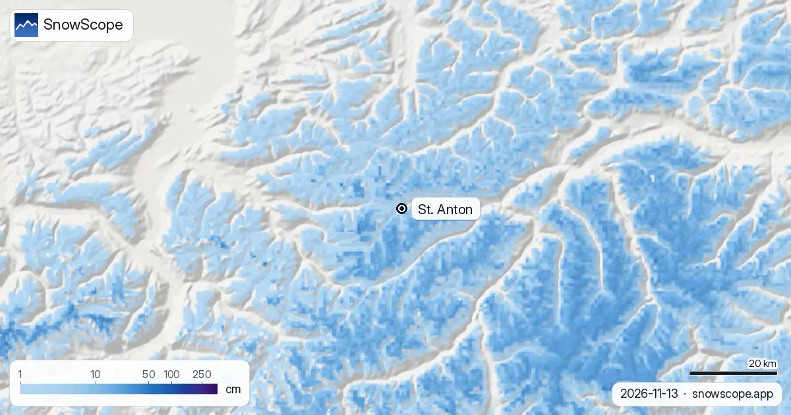
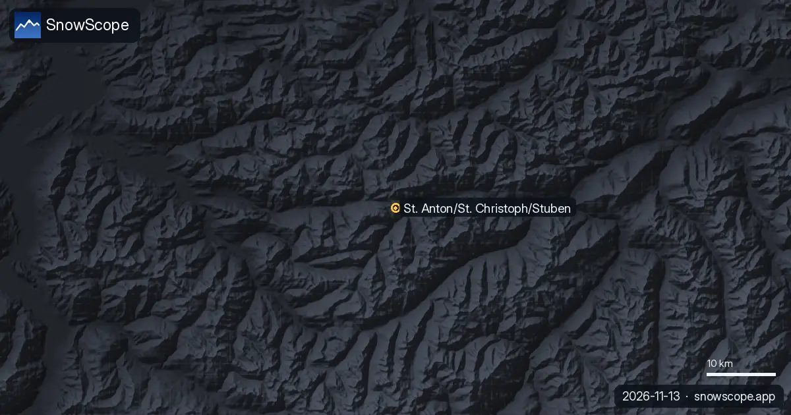
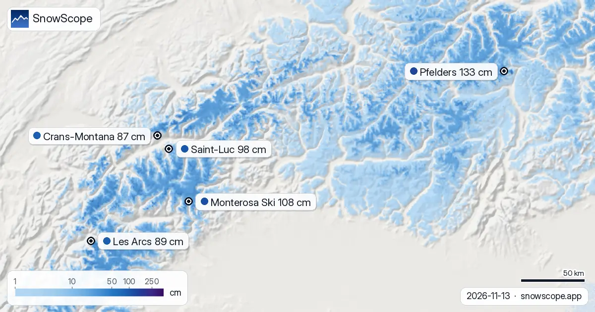

St Anton snow depth: almost bare today, 33 to 42 cm coming up high (13 November 2026)
St Anton is known for steep, demanding skiing, and steep skiing needs depth. So how deep is the snow in St Anton today? Not deep at all yet. Our map shows about 1 cm at the top of the ski area (2642 m), about 5 cm at mid-mountain (1962 m) and bare ground in the village at 1282 m. The coming week changes that: 42 cm up high and 33 cm in the middle, and other forecasts are even keener.
See the live snow forecast for St. Anton am Arlberg in the SnowScope appSnow depth, powder alerts and the 3D map, free.
Today: the wind took most of it
The top had 17 cm of new snow over the last seven days, 7 cm of it in the last 24 hours. Very little of it is lying. High, open ridges on the Arlberg lose early snow quickly to wind and sun, and our estimate up there is about 1 cm on the ground. Mid-mountain does a little better at about 5 cm, held in the bowls and gullies. The village has had nothing.
The week ahead: depth arrives, rain in the village
Seven days out, we see 42 cm at the top, 33 cm at mid-mountain and 18 cm at village height, about 5 cm up high in the first 24 hours. This time our numbers are the careful ones: the other forecasts we compare with give 38 to 93 cm at the top and 34 to 86 cm at mid-mountain. A wide range like that means a real storm with an uncertain size.
The snow line sits near 1480 m, just above the village, so St Anton itself gets mostly rain while the slopes above it turn white.

How deep is deep enough?
Steep runs and off-piste faces need far more snow than a groomed blue. A useful marker is 50 cm on the ground at mid-mountain. In our 46 past winters (1980-81 to 2025-26) St Anton holds that for 17 weeks of the winter in 9 of 10 winters, and at the top for 24 weeks.
A usual November has 4 cm in the village, 22 cm at mid-mountain and 49 cm at the top, so even a normal mid-November is thin here. December climbs to 24, 62 and 110 cm, January to 44, 101 and 156 cm. In other words, mid-mountain usually passes the 50 cm mark some time in December.
The long view
A middle winter peaks at 80 cm in the village, 194 cm at mid-mountain and 298 cm at the top. Those peaks have come down: at mid-mountain from 218 cm in the first 15 of our winters to 178 cm in the last 15, in the village from 91 to 73 cm. Last winter peaked at 62, 159 and 238 cm.
The surest week for depth at mid-mountain is week 13, at the end of March. The mapped ski area, with St. Christoph and Stuben, counts 99 km of runs and 40 lifts.
Tips for skiers
- Do not plan steep or off-piste skiing in St Anton before mid-mountain holds about 50 cm.
- A storm of this size raises the avalanche danger: read the Tyrol avalanche report every morning before leaving the piste.
- Expect rain in the village and snow on the Arlberg pass road this week: carry chains.
More maps (external sites)
References and credits
- St. Anton am Arlberg, official site (lifts, opening dates, snow report) www.stantonamarlberg.com/
- Avalanche.report, avalanche bulletin for Tyrol, South Tyrol and Trentino avalanche.report/
About these numbers
Snow numbers: the SnowScope snow model, run of 12 November 2026 for 13 November, at three heights of the ski area (an estimate for the area, not resort measurements), and our snow history, 46 past winters (1980-81 to 2025-26), corrected for height. The forecast range and the snow line compare other weather forecasts at the same heights. Run length and lift count: OpenSkiMap mapping. Forecasts change: look at the map before you go.
Official avalanche bulletins: Avalanche.report – Euregio Tyrol
Cite this report
For research, teaching or the press: the numbers and charts are free to reuse under CC BY 4.0 with this citation.
SnowScope (2026), St Anton snow depth: almost bare today, 33 to 42 cm coming up high (13 November 2026), https://snowscope.app/blog/en/2026/11/st-anton-snow-depth-13-november-2026.html, accessed 2026-11-13
SnowScope (Atlas Labs). (2026, November 13). St Anton snow depth: almost bare today, 33 to 42 cm coming up high (13 November 2026). SnowScope snow reports. https://snowscope.app/blog/en/2026/11/st-anton-snow-depth-13-november-2026.html
BibTeX
@misc{snowscope2026stantonsnowdepth13novemb,
author = {{SnowScope (Atlas Labs)}},
title = {St Anton snow depth: almost bare today, 33 to 42 cm coming up high (13 November 2026)},
year = {2026},
month = nov,
howpublished = {\url{https://snowscope.app/blog/en/2026/11/st-anton-snow-depth-13-november-2026.html}},
note = {Published 2026-11-13 13:20 UTC; accessed 2026-11-13}
}· CC BY 4.0 · Methods, data and tools →
St. Anton am Arlberg: snow and temperature by height, this winter vs last (tools) →
Follow St. Anton am Arlberg
Free: a message when fresh snow is coming, and the forecast every morning.
More snow reports

Snow today at the Grands Montets, the European seasonal forecast for December and our map of where December looks snowier or leaner around Mont Blanc.

Model plus forecast in the Alps today gives fresh powder. What to wear, what to pack and when to ski, resort by resort. Packing advice comes with …

The snow-covered area has grown from 39,090 km² on 11 November to 76,100 km² today, and our forecast gives 57,910 km² on 16 November: more ground is …